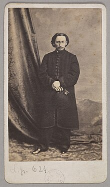
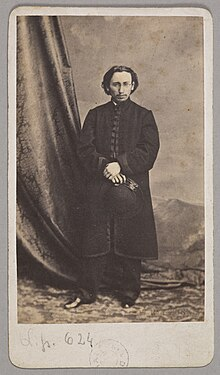
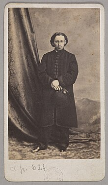

Portrety Jana Matejko
 

polski malarz żyjący w latach 1838-1893, twórca obrazów historycznych i batalistycznych, historiozof. Jeden z najwybitniejszych polskich malarzy w historii. W latach 1852–1858 studiował u Władysława Łuszczkiewicza i Wojciecha Stattlera w Szkole Sztuk Pięknych w Krakowie, której później był dyrektorem. Artysta był gorącym patriotą, a jego dzieła wyjątkowym wyrazem idei niepodległościowych.

Jan Matejko zyskał międzynarodową sławę i uznanie jeszcze przed ukończeniem trzydziestego roku życia. Jego obrazy cieszyły się ogromną popularnością, a jego kunszt doceniany był przez krytyków na całym świecie. Punktem przełomowym w karierze tego wielkiego artysty było otrzymanie w czasie dorocznego Salonu Paryskiego w 1865 roku złotego medalu za obraz „Kazanie Skargi”. Matejkę uznano wówczas za jednego z najznakomitszych malarzy europejskich tworzących w nurcie historycznym.
© 2024 Igor Pędziwilk, Kacper Zagłoba 2P